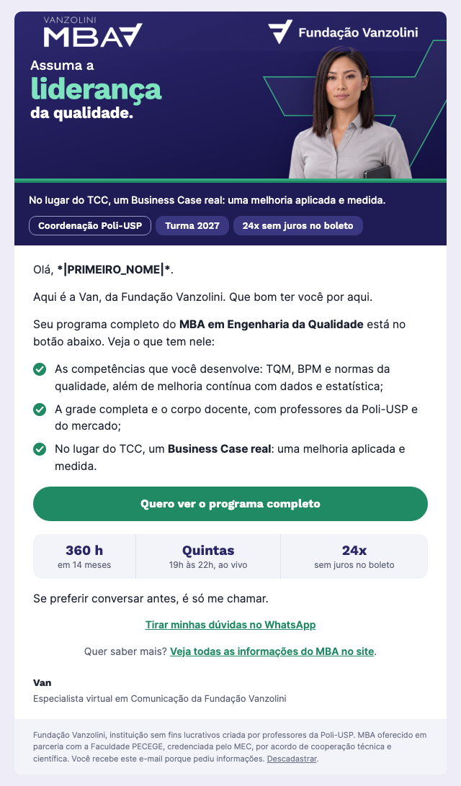

E1 · Entradanovo topo
Dia 0 · Todos que convertem no formulário
AAssuma a liderança da qualidade: seu programa chegou
BSeu programa do MBA em Engenharia da Qualidade
24 e-mails, oito por curso, na estrutura da régua validada. Nesta versão, os personagens dos e-mails de entrada aparecem de frente, como nas peças da campanha. Clique na prévia para abrir o e-mail.
Cinco topos ajustados. Nos três e-mails de entrada, o personagem aparece de frente, com o recorte já aprovado nas peças e o rosto na mesma escala nos três cursos. Os topos com cena real mantêm as cenas da v3; no O2 do EQ e no Fecho de Liderança, o enquadramento ficou mais fechado no personagem. Textos, estrutura e os demais e-mails seguem iguais à v3.